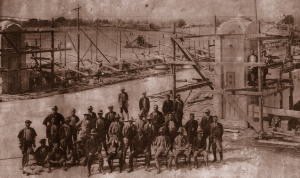
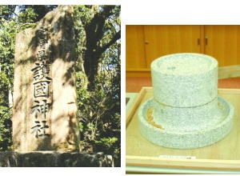

- 有限会社 大石石材店
大石石材店のはじまりTOPICS
大石 据NEWS
- 高知県土佐にて先祖代々の石工を営み、昭和元年より、大石据（当時２０歳）が宮崎の地にて、旧橘橋、県庁、平和の塔などの石工事に従事し、昭和４年に大石石材店を開業。 (写真提供：宮崎産経新聞社)

- 当時は、ほとんどが手仕事で行われていましたが、時代の流れと共に機械化が進み、石屋の在り方が大きく変化してまいりました。

- しかしながら、「石」の性質を知り、ひとつひとつに心を刻む「据の石工魂」をこれからも引継ぎ、日々精進して参ります。
大石石材店 代表 大石 義朗